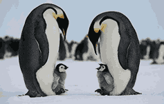
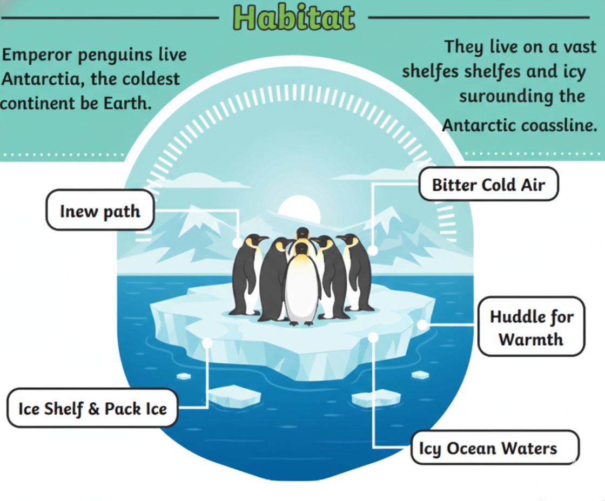
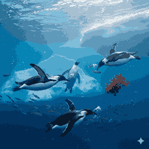

The Largest Penguins in the World

Emperor penguins are the tallest and heaviest penguin species. They are known for their unique breeding behavior during the harsh Antarctic winter.

Emperor penguins live in Antarctica. They survive extreme cold temperatures and strong winds by huddling together in large groups.

Emperor penguins mainly eat fish, squid, and krill. They are excellent swimmers and can dive deeper than any other bird.